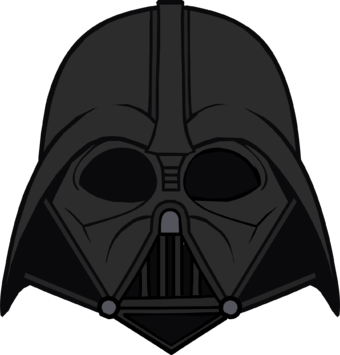

404 Error
I appreciate you checking out this npmjs.com clone, however I made this to
only
clone the
landing
page, so now I have Darth Vader here to turn you to the dark side, errr I mean back to the landing page.
Go Back